ECET 250E Formula sheet (PDF) ECET Quiz 2 by question type Choose the type you want to practise. Solve each original prompt on paper, then open its worked solution. Lecture and problem-set questions appear together. The fifth quiz topic is still unknown.
1. Switched RL · find inductor current Use the switch position before t = 0 to get the starting current. Trace the new current path to decide whether the final current is zero or source-driven.
The switch disconnects the source Find i(t) after the source disconnects Lecture example 7.4 · slide 19
Worked solution 1. Solve the closed-switch circuit A long time at DC makes the inductor a short. The two remaining branches after the 2 Ω resistor are 12 Ω and 4 Ω.
40 V 2 Ω 4 Ω 12 Ω i ↓ Before opening · the shorted inductor bypasses the 16 Ω resistor. R i n = 2 + ( 12 ∥ 4 ) = 5 Ω R_{in}=2+(12\parallel4)=5\,\Omega R in = 2 + ( 12 ∥ 4 ) = 5 Ω I s = 40 / 5 = 8 A , v n o d e = 40 − 2 ( 8 ) = 24 V I_s=40/5=8\,\mathrm A,\quad v_{\rm node}=40-2(8)=24\,\mathrm V I s = 40/5 = 8 A , v node = 40 − 2 ( 8 ) = 24 V 2. Carry the branch current through the switch The 4 Ω branch feeds the inductor. Its current is continuous.
i ( 0 + ) = i ( 0 − ) = 24 / 4 = 6 A i(0^+)=i(0^-)=24/4=6\,\mathrm A i ( 0 + ) = i ( 0 − ) = 24/4 = 6 A 3. Find the discharge path The 16 Ω branch is now in parallel with the path through 4 Ω and 12 Ω. The source has disconnected.
8 Ω 2 H i ↓ After opening · the resistor network reduces to 8 Ω across the inductor. R e q = 16 ∥ ( 4 + 12 ) = 8 Ω R_{eq}=16\parallel(4+12)=8\,\Omega R e q = 16 ∥ ( 4 + 12 ) = 8 Ω τ = L / R e q = 2 / 8 = 0.25 s \tau=L/R_{eq}=2/8=0.25\,\mathrm s τ = L / R e q = 2/8 = 0.25 s Final result The current starts at 6 A and decays to zero.
i ( t ) = 6 e − t / 0.25 = 6 e − 4 t A , t > 0 i(t)=6e^{-t/0.25}=6e^{-4t}\,\mathrm A,\quad t>0 i ( t ) = 6 e − t /0.25 = 6 e − 4 t A , t > 0 Switch opens and the inductor discharges Problem Set 6 · Q4 (7.11)
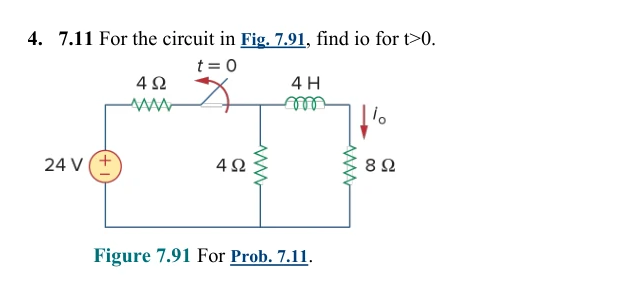
Worked solution 1. Find the current before opening Short the inductor at DC steady state. Use voltage division across the shunt network, then find the current in the 8 Ω branch.
4 Ω 8 Ω At DC the shorted inductor puts 4 Ω and 8 Ω across the same nodes. The 24 V source feeds this pair through another 4 Ω. R p = 4 ∥ 8 = 8 / 3 Ω R_p=4\parallel8=8/3\,\Omega R p = 4 ∥ 8 = 8/3 Ω V n = 24 8 / 3 4 + 8 / 3 = 9.6 V V_n=24\frac{8/3}{4+8/3}=9.6\,\mathrm V V n = 24 4 + 8/3 8/3 = 9.6 V i 0 ( 0 − ) = 9.6 / 8 = 1.2 A i_0(0^-)=9.6/8=1.2\,\mathrm A i 0 ( 0 − ) = 9.6/8 = 1.2 A 2. Trace the discharge loop The switch removes the supply. The current in the inductor still flows down through the 8 Ω resistor at the instant of opening.
4 + 8 = 12 Ω 4 H After opening · the source branch disconnects. The two resistors form one discharge loop. i 0 ( 0 + ) = 1.2 A , i 0 ( ∞ ) = 0 i_0(0^+)=1.2\,\mathrm A,\quad i_0(\infty)=0 i 0 ( 0 + ) = 1.2 A , i 0 ( ∞ ) = 0 τ = 4 4 + 8 = 1 3 s \tau=\frac{4}{4+8}=\tfrac13\,\mathrm s τ = 4 + 8 4 = 3 1 s Final result The initial value is 1.2 A. After one time constant the current has fallen to about 0.44 A.
i 0 ( t ) = 1.2 e − 3 t A , t > 0 i_0(t)=1.2e^{-3t}\,\mathrm A,\quad t>0 i 0 ( t ) = 1.2 e − 3 t A , t > 0 The switch changes resistance while the source stays connected Example 7.12 asks for current. Its full solution also covers the DC voltage question in Type 3. Open the original example and circuit redraws .
Practice variation · close the bypass after a long open interval Use the circuit in 7.12 with the switching direction reversed. Find i(t) for t > 0.
Worked solution Initially 10 V drives 5 Ω, giving 2 A. Closing the bypass leaves 2 Ω, so the final current is 5 A and τ = (1/3)/2 = 1/6 s.
i ( t ) = 5 + ( 2 − 5 ) e − 6 t = 5 − 3 e − 6 t A i(t)=5+(2-5)e^{-6t}=5-3e^{-6t}\ \mathrm A i ( t ) = 5 + ( 2 − 5 ) e − 6 t = 5 − 3 e − 6 t A Only the time constant is requested Find the resistance seen by the inductor Problem Set 6 · Q6
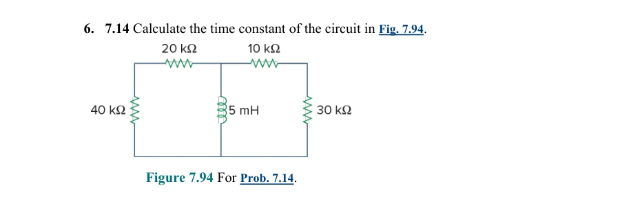
Worked solution 1. Equivalent resistance Each side is a series path; the two paths are parallel.
R e q = 60 ∥ 40 = 24 k Ω R_{eq}=60\parallel40=24\,\mathrm{k}\Omega R e q = 60 ∥ 40 = 24 k Ω 2. Time constant Use L/R with henries and ohms.
τ = 0.005 24000 = 2.08333 × 10 − 7 s \tau=\frac{0.005}{24000}=2.08333\times10^{-7}\,\mathrm s τ = 24000 0.005 = 2.08333 × 1 0 − 7 s Final result τ = 0.208333 μ s \tau=0.208333\,\mu\mathrm s τ = 0.208333 μ s A small inductance and large discharge resistance give a very short time constant.
Back to question types ↑
2. Switched RLC · classify damping and find the constants Redraw the circuit after switching. Start with the matching series or parallel case below.
Series RLC · overdamped and underdamped Switch from A to B and solve both exponential coefficients Problem Set 7 · Q2 (8.17)
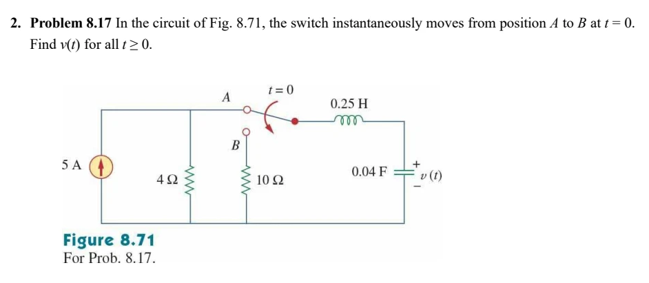
Worked solution 1. Find the stored energy variables at A After a long time the capacitor is open. All 5 A pass through 4 Ω, fixing the capacitor voltage. The open capacitor branch carries zero inductor current.
v ( 0 + ) = v ( 0 − ) = 5 ( 4 ) = 20 V v(0^+)=v(0^-)=5(4)=20\,\mathrm V v ( 0 + ) = v ( 0 − ) = 5 ( 4 ) = 20 V i L ( 0 + ) = 0 , v ′ ( 0 + ) = 0 i_L(0^+)=0,\qquad v'(0^+)=0 i L ( 0 + ) = 0 , v ′ ( 0 + ) = 0 2. Classify the circuit at B The source and 4 Ω resistor disconnect. Use the series damping factor and the undamped natural frequency.
0.25 H 0.04 F 10 Ω At B · one source-free series loop remains. The capacitor starts at 20 V. α = 10 / [ 2 ( 0.25 ) ] = 20 , ω 0 = 1 / 0.25 ( 0.04 ) = 10 \alpha=10/[2(0.25)]=20,\quad\omega_0=1/\sqrt{0.25(0.04)}=10 α = 10/ [ 2 ( 0.25 )] = 20 , ω 0 = 1/ 0.25 ( 0.04 ) = 10 s 1 , 2 = − 20 ± 20 2 − 10 2 s_{1,2}=-20\pm\sqrt{20^2-10^2} s 1 , 2 = − 20 ± 2 0 2 − 1 0 2 s 1 = − 2.67949 , s 2 = − 37.32051 s_1=-2.67949,\qquad s_2=-37.32051 s 1 = − 2.67949 , s 2 = − 37.32051 3. Solve for the two coefficients The two real roots give two exponentials. At zero, the voltage fixes their sum and the zero slope fixes their weighted sum.
v = A 1 e s 1 t + A 2 e s 2 t v=A_1e^{s_1t}+A_2e^{s_2t} v = A 1 e s 1 t + A 2 e s 2 t A 1 + A 2 = 20 , s 1 A 1 + s 2 A 2 = 0 A_1+A_2=20,\quad s_1A_1+s_2A_2=0 A 1 + A 2 = 20 , s 1 A 1 + s 2 A 2 = 0 A 1 = − 20 s 2 s 1 − s 2 = 21.547 , A 2 = 20 − A 1 = − 1.547 A_1=\frac{-20s_2}{s_1-s_2}=21.547,\quad A_2=20-A_1=-1.547 A 1 = s 1 − s 2 − 20 s 2 = 21.547 , A 2 = 20 − A 1 = − 1.547 Final result At zero the two terms sum to 20 V. Both decay to zero.
v ( t ) = ( 21.547 e − 2.67949 t − 1.547 e − 37.32051 t ) V v(t)=(21.547e^{-2.67949t}-1.547e^{-37.32051t})\,\mathrm V v ( t ) = ( 21.547 e − 2.67949 t − 1.547 e − 37.32051 t ) V Switch opens · find the underdamped current Lecture example 8.4 · slide 17
Worked solution 1. Find both stored values Before opening, no current flows through the capacitor branch or its 3 Ω resistor. The capacitor has the same voltage as the 6 Ω resistor.
4 Ω 6 Ω 10 V i ↓ Before opening · the capacitor branch is open and the inductor is a short. i 0 = 10 / ( 4 + 6 ) = 1 A , v C 0 = 6 ( 1 ) = 6 V i_0=10/(4+6)=1\,\mathrm A,\quad v_{C0}=6(1)=6\,\mathrm V i 0 = 10/ ( 4 + 6 ) = 1 A , v C 0 = 6 ( 1 ) = 6 V 2. Classify the remaining loop Opening the switch disconnects the source. The 3 Ω and 6 Ω resistors now carry the same current.
9 Ω 0.5 H 0.02 F + − i ↓ After opening · the two resistors carry one loop current. The capacitor is positive at the top. α = 9 / [ 2 ( 0.5 ) ] = 9 s − 1 \alpha=9/[2(0.5)]=9\,\mathrm{s}^{-1} α = 9/ [ 2 ( 0.5 )] = 9 s − 1 ω 0 = 1 / ( 0.5 ) ( 0.02 ) = 10 r a d / s \omega_0=1/\sqrt{(0.5)(0.02)}=10\,\mathrm{rad/s} ω 0 = 1/ ( 0.5 ) ( 0.02 ) = 10 rad/s α < ω 0 , ω d = 100 − 81 = 19 r a d / s \alpha<\omega_0,\qquad \omega_d=\sqrt{100-81}=\sqrt{19}\,\mathrm{rad/s} α < ω 0 , ω d = 100 − 81 = 19 rad/s 3. Use the circuit to find the initial slope Trace the loop with i downward through L. The capacitor is a voltage rise in that direction.
L d i / d t + 9 i − v C = 0 L\,di/dt+9i-v_C=0 L d i / d t + 9 i − v C = 0 i ′ ( 0 + ) = [ 6 − 9 ( 1 ) ] / 0.5 = − 6 A / s i'(0^+)=[6-9(1)]/0.5=-6\,\mathrm{A/s} i ′ ( 0 + ) = [ 6 − 9 ( 1 )] /0.5 = − 6 A/s 4. Determine the two coefficients At t = 0 the cosine is one and the sine is zero. Differentiating the response gives the second equation.
i = e − 9 t [ B 1 cos ( ω d t ) + B 2 sin ( ω d t ) ] i=e^{-9t}[B_1\cos(\omega_dt)+B_2\sin(\omega_dt)] i = e − 9 t [ B 1 cos ( ω d t ) + B 2 sin ( ω d t )] B 1 = 1 , − 9 B 1 + 19 B 2 = − 6 B_1=1,\quad -9B_1+\sqrt{19}B_2=-6 B 1 = 1 , − 9 B 1 + 19 B 2 = − 6 B 2 = 3 / 19 B_2=3/\sqrt{19} B 2 = 3/ 19 Final result The initial slope is −9 + 3 = −6 A/s and the envelope decays to zero.
i ( t ) = e − 9 t [ cos ( 19 t ) + 3 19 sin ( 19 t ) ] A i(t)=e^{-9t}\left[\cos(\sqrt{19}t)+\tfrac3{\sqrt{19}}\sin(\sqrt{19}t)\right]\mathrm A i ( t ) = e − 9 t [ cos ( 19 t ) + 19 3 sin ( 19 t ) ] A Parallel RLC · compare damping cases and solve a driven response Solve the same circuit for three resistances Lecture example 8.5 · slide 27
Worked solution 1. Set up all three cases Use the top node as positive and take each branch current downward. The initial capacitor voltage is 5 V and the initial inductor current is zero.
R 1 H 10 mF ↓ ↓ ↓ For t > 0 · sum the three downward branch currents at the upper node. i R + i L + i C = 0 , C = 0.010 F i_R+i_L+i_C=0,\qquad C=0.010\,\mathrm F i R + i L + i C = 0 , C = 0.010 F 2. Get the initial slope from KCL At the switching instant the resistor current is 5/R and the capacitor supplies that current. Keep the full RLC circuit for the subsequent response.
R 0 A 5 V At 0⁺ only · iL = 0 opens that branch, and the capacitor fixes the node voltage at 5 V. v ′ ( 0 + ) = − 5 / R + 0 0.010 = − 500 / R v'(0^+)=-\frac{5/R+0}{0.010}=-500/R v ′ ( 0 + ) = − 0.010 5/ R + 0 = − 500/ R α = 1 / ( 2 R C ) = 50 / R , ω 0 = 1 / L C = 10 \alpha=1/(2RC)=50/R,\quad\omega_0=1/\sqrt{LC}=10 α = 1/ ( 2 R C ) = 50/ R , ω 0 = 1/ L C = 10 3. For R = 1.923 Ω, fit two exponentials With α ≈ 26 > 10 the roots are approximately −2 and −50. Use the voltage and its slope at zero to find both constants.
A 1 + A 2 = 5 , − 2 A 1 − 50 A 2 ≈ − 260 A_1+A_2=5,\quad -2A_1-50A_2\approx-260 A 1 + A 2 = 5 , − 2 A 1 − 50 A 2 ≈ − 260 A 1 ≈ − 5 / 24 , A 2 ≈ 125 / 24 A_1\approx-5/24,\quad A_2\approx125/24 A 1 ≈ − 5/24 , A 2 ≈ 125/24 v ( t ) ≈ − 0.2083 e − 2 t + 5.2083 e − 50 t V v(t)\approx-0.2083e^{-2t}+5.2083e^{-50t}\ \mathrm V v ( t ) ≈ − 0.2083 e − 2 t + 5.2083 e − 50 t V 4. For R = 5 Ω, fit the repeated-root form Here α = 10 and the initial slope is −100 V/s.
v ( t ) = ( A 1 + A 2 t ) e − 10 t v(t)=(A_1+A_2t)e^{-10t} v ( t ) = ( A 1 + A 2 t ) e − 10 t A 1 = 5 , A 2 − 10 ( 5 ) = − 100 A_1=5,\quad A_2-10(5)=-100 A 1 = 5 , A 2 − 10 ( 5 ) = − 100 v ( t ) = ( 5 − 50 t ) e − 10 t V v(t)=(5-50t)e^{-10t}\ \mathrm V v ( t ) = ( 5 − 50 t ) e − 10 t V 5. For R = 6.25 Ω, fit a damped sinusoid Here α = 8 < 10 and the initial slope is −80 V/s.
ω d = 10 2 − 8 2 = 6 r a d / s \omega_d=\sqrt{10^2-8^2}=6\,\mathrm{rad/s} ω d = 1 0 2 − 8 2 = 6 rad/s A 1 = 5 , − 8 ( 5 ) + 6 A 2 = − 80 A_1=5,\quad -8(5)+6A_2=-80 A 1 = 5 , − 8 ( 5 ) + 6 A 2 = − 80 A 2 = − 20 / 3 A_2=-20/3 A 2 = − 20/3 v ( t ) = e − 8 t [ 5 cos ( 6 t ) − 20 3 sin ( 6 t ) ] V v(t)=e^{-8t}[5\cos(6t)-\tfrac{20}3\sin(6t)]\ \mathrm V v ( t ) = e − 8 t [ 5 cos ( 6 t ) − 3 20 sin ( 6 t )] V Check. Every case starts at 5 V and tends to zero. Increasing R reduces α in this parallel circuit.
Switch closes with a parallel RLC network Problem Set 7 · Q4
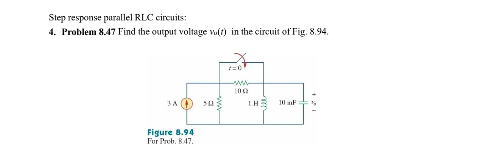
Worked solution 1. Use the pre-switch DC circuit The capacitor is open and the inductor shorts its branch. Current divides between 5 Ω and 10 Ω.
i L 0 = 3 5 5 + 10 = 1 A , v 0 = 0 i_{L0}=3\frac5{5+10}=1\ \mathrm A,\quad v_0=0 i L 0 = 3 5 + 10 5 = 1 A , v 0 = 0 2. Find the post-switch parameters The switch bypasses 10 Ω. R = 5 Ω, C = 0.01 F, L = 1 H.
α = 1 2 ( 5 ) ( 0.01 ) = 10 = ω 0 = 1 1 ( 0.01 ) \alpha=\frac1{2(5)(0.01)}=10=\omega_0=\frac1{\sqrt{1(0.01)}} α = 2 ( 5 ) ( 0.01 ) 1 = 10 = ω 0 = 1 ( 0.01 ) 1 3. Solve for inductor current At infinity the inductor carries 3 A. Its starting slope is v0/L = 0.
i L = 3 + ( A + B t ) e − 10 t , A = − 2 , B − 10 A = 0 ⇒ B = − 20 i_L=3+(A+Bt)e^{-10t},\quad A=-2,\quad B-10A=0\ \Rightarrow\ B=-20 i L = 3 + ( A + B t ) e − 10 t , A = − 2 , B − 10 A = 0 ⇒ B = − 20 4. Differentiate to get the requested voltage Use the passive voltage polarity across the inductor.
v o = L d i L d t = d d t [ 3 + ( − 2 − 20 t ) e − 10 t ] v_o=L\frac{di_L}{dt}=\frac{d}{dt}\left[3+(-2-20t)e^{-10t}\right] v o = L d t d i L = d t d [ 3 + ( − 2 − 20 t ) e − 10 t ] Final result v o ( t ) = 200 t e − 10 t V , t ≥ 0 v_o(t)=200t e^{-10t}\ \mathrm V,\quad t\ge0 v o ( t ) = 200 t e − 10 t V , t ≥ 0 vo begins and ends at zero. KCL gives vo′(0) = (3−1)/0.01 = 200 V/s. In the key this is numbered 5, but it is assignment Q4.
Switch opens with a source still connected Problem Set 7 · Q5
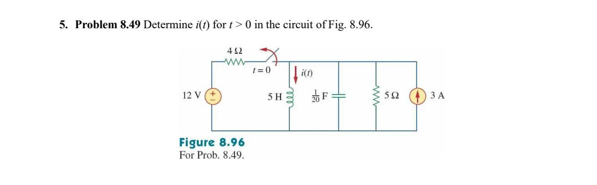
Worked solution 1. Find initial and final currents Before switching, both sources feed the shorted inductor. After switching, only the 3 A source remains.
i 0 = 3 + 12 4 = 6 A , v 0 = 0 , i ∞ = 3 A i_0=3+\frac{12}{4}=6\ \mathrm A,\quad v_0=0,\quad i_\infty=3\ \mathrm A i 0 = 3 + 4 12 = 6 A , v 0 = 0 , i ∞ = 3 A 2. Classify the parallel RLC response Use R = 5 Ω, C = 1/20 F and L = 5 H.
α = 1 2 ( 5 ) ( 0.05 ) = 2 , ω 0 = 1 5 ( 0.05 ) = 2 \alpha=\frac1{2(5)(0.05)}=2,\quad\omega_0=\frac1{\sqrt{5(0.05)}}=2 α = 2 ( 5 ) ( 0.05 ) 1 = 2 , ω 0 = 5 ( 0.05 ) 1 = 2 3. Use the critically damped form The initial derivative is v0/L = 0.
i = 3 + ( A + B t ) e − 2 t , A = 6 − 3 = 3 , B − 2 A = 0 ⇒ B = 6 i=3+(A+Bt)e^{-2t},\quad A=6-3=3,\quad B-2A=0\ \Rightarrow\ B=6 i = 3 + ( A + B t ) e − 2 t , A = 6 − 3 = 3 , B − 2 A = 0 ⇒ B = 6 Final result i ( t ) = 3 + ( 3 + 6 t ) e − 2 t A , t > 0 i(t)=3+(3+6t)e^{-2t}\ \mathrm A,\quad t>0 i ( t ) = 3 + ( 3 + 6 t ) e − 2 t A , t > 0 i(0) = 6 A, i′(0) = 0, and i(∞) = 3 A. This is numbered 6 in the key but Q5 on the assignment.
Choose a component or classify the roots Choose R for critical damping Problem Set 7 · Q1
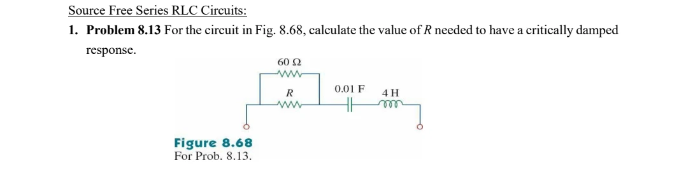
Worked solution 1. Reduce the resistor pair R is in parallel with 60 Ω. This equivalent is in series with L and C.
R e q = 60 R 60 + R , ω 0 = 1 4 ( 0.01 ) = 5 R_{eq}=\frac{60R}{60+R},\quad\omega_0=\frac1{\sqrt{4(0.01)}}=5 R e q = 60 + R 60 R , ω 0 = 4 ( 0.01 ) 1 = 5 2. Set the critical-damping condition For a series circuit, alpha = Req/(2L).
R e q 2 ( 4 ) = 5 ⇒ R e q = 40 Ω \frac{R_{eq}}{2(4)}=5\ \Rightarrow\ R_{eq}=40\ \Omega 2 ( 4 ) R e q = 5 ⇒ R e q = 40 Ω 3. Solve for the actual resistor Use the equivalent resistance, not 40 Ω as the answer for R.
60 R 60 + R = 40 ⇒ 60 R = 2400 + 40 R \frac{60R}{60+R}=40\ \Rightarrow\ 60R=2400+40R 60 + R 60 R = 40 ⇒ 60 R = 2400 + 40 R Final result R = 120 Ω R=120\ \Omega R = 120 Ω 120 Ω in parallel with 60 Ω is 40 Ω; alpha and omega-zero both equal 5.
Choose C for underdamping Problem Set 7 · Q3
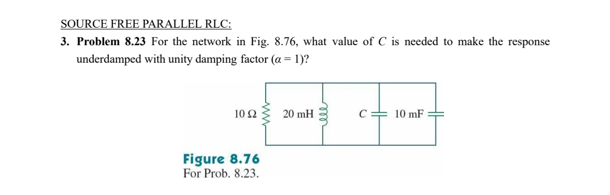
Worked solution 1. Combine the capacitors The unknown C and the 10 mF capacitor share the same two nodes.
C T = C + 0.01 F C_T=C+0.01\ \mathrm F C T = C + 0.01 F 2. Use the required damping factor For parallel RLC, alpha = 1/(2 R CT).
1 = 1 2 ( 10 ) C T ⇒ C T = 0.05 F 1=\frac1{2(10)C_T}\ \Rightarrow\ C_T=0.05\ \mathrm F 1 = 2 ( 10 ) C T 1 ⇒ C T = 0.05 F 3. Subtract the existing capacitor and verify damping Use L = 20 mH = 0.020 H.
C = 0.05 − 0.01 = 0.04 F , ω 0 = 1 0.020 ( 0.05 ) = 31.62 > 1 C=0.05-0.01=0.04\ \mathrm F,\quad\omega_0=\frac1{\sqrt{0.020(0.05)}}=31.62>1 C = 0.05 − 0.01 = 0.04 F , ω 0 = 0.020 ( 0.05 ) 1 = 31.62 > 1 Final result C = 40 m F ( underdamped ) C=40\ \mathrm{mF}\quad(\text{underdamped}) C = 40 mF ( underdamped ) The key prints omega-zero as 141.42; the pictured values give 31.62 rad/s. This arithmetic error does not change C or the damping classification.
Related lecture examples · 8.1 · initial values and slopes · 8.3 · characteristic roots · 8.8 · parallel step response
Back to question types ↑
3. DC RL · find voltage and current Use the stated time condition: long-time DC, immediately after switching, or the full transient.
Find the driven RL current, then the inductor voltage Lecture example 7.12 · slide 38
Worked solution 1. Find the current before opening The closed bypass carries the current around the 3 Ω resistor. At DC steady state the inductor voltage is zero.
2 Ω i ↓ 10 V Before opening · the bypass shorts 3 Ω and the steady-state inductor is a wire. i ( 0 − ) = 10 / 2 = 5 A , i ( 0 + ) = 5 A i(0^-)=10/2=5\,\mathrm A,\quad i(0^+)=5\,\mathrm A i ( 0 − ) = 10/2 = 5 A , i ( 0 + ) = 5 A 2. Redraw with the bypass open Current now passes through both resistors. Short the independent voltage source to find the resistance seen by L.
2 + 3 = 5 Ω ⅓ H 10 V i ↓ After opening · the source drives both resistors and the inductor. i ( ∞ ) = 10 / ( 2 + 3 ) = 2 A i(\infty)=10/(2+3)=2\,\mathrm A i ( ∞ ) = 10/ ( 2 + 3 ) = 2 A τ = ( 1 / 3 ) / ( 2 + 3 ) = 1 / 15 s \tau=(1/3)/(2+3)=1/15\,\mathrm s τ = ( 1/3 ) / ( 2 + 3 ) = 1/15 s 3. Substitute into the complete response Use the final value plus the decaying difference from the initial value.
i ( t ) = i ( ∞ ) + [ i ( 0 + ) − i ( ∞ ) ] e − t / τ i(t)=i(\infty)+[i(0^+)-i(\infty)]e^{-t/\tau} i ( t ) = i ( ∞ ) + [ i ( 0 + ) − i ( ∞ )] e − t / τ Final result At zero the expression gives 5 A. As the exponential dies away it gives 2 A.
i ( t ) = 2 + 3 e − 15 t A , t > 0 i(t)=2+3e^{-15t}\,\mathrm A,\quad t>0 i ( t ) = 2 + 3 e − 15 t A , t > 0 Class-clue extension · find the DC circuit voltages Taking the upper end of L as positive, KVL gives the inductor voltage. The negative initial voltage agrees with the falling current.
v R ( t ) = 5 i ( t ) = 10 + 15 e − 15 t V v_R(t)=5i(t)=10+15e^{-15t}\,\mathrm V v R ( t ) = 5 i ( t ) = 10 + 15 e − 15 t V v L ( t ) = 10 − v R ( t ) = − 15 e − 15 t V v_L(t)=10-v_R(t)=-15e^{-15t}\,\mathrm V v L ( t ) = 10 − v R ( t ) = − 15 e − 15 t V Recover R, L, τ and energy from v(t) and i(t) Problem Set 6 · Q5
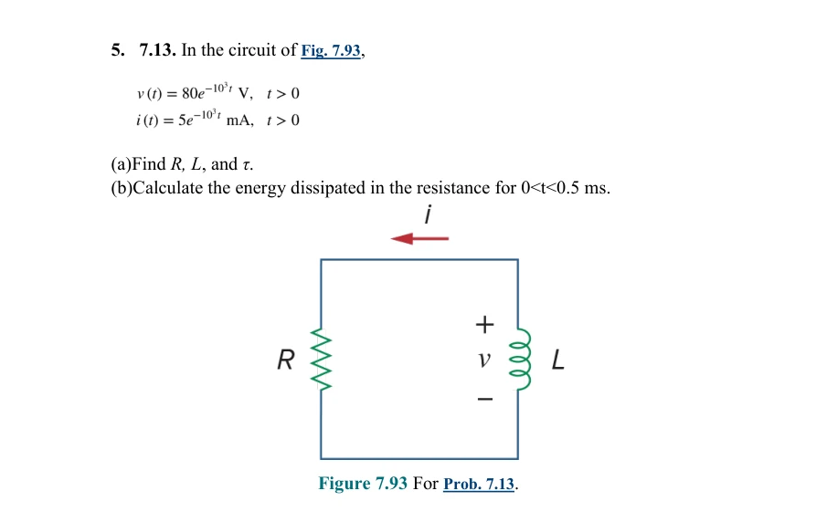
Worked solution 1. Resistance and time constant The resistor receives the shown voltage and current. The exponent gives 1/τ.
R = 80 0.005 = 16000 Ω ; τ = 1 / 1000 = 1 m s R=\frac{80}{0.005}=16000\,\Omega;\quad\tau=1/1000=1\,\mathrm{ms} R = 0.005 80 = 16000 Ω ; τ = 1/1000 = 1 ms 2. Inductance Use L = Rτ. The non-passive reference on the inductor gives v = −L di/dt.
L = 16000 ( 0.001 ) = 16 H L=16000(0.001)=16\,\mathrm H L = 16000 ( 0.001 ) = 16 H 3. Dissipated energy Integrate positive resistor power.
p = v i = 0.4 e − 2000 t W ; W = ∫ 0 0.0005 0.4 e − 2000 t d t = 0.0002 ( 1 − e − 1 ) J p=vi=0.4e^{-2000t}\,\mathrm W;\quad W=\int_0^{0.0005}0.4e^{-2000t}dt=0.0002(1-e^{-1})\,\mathrm J p = v i = 0.4 e − 2000 t W ; W = ∫ 0 0.0005 0.4 e − 2000 t d t = 0.0002 ( 1 − e − 1 ) J Final result R = 16 k Ω , L = 16 H , τ = 1 m s , W R = 126.424 μ J R=16\,\mathrm{k}\Omega,\ L=16\,\mathrm H,\ \tau=1\,\mathrm{ms},\ W_R=126.424\,\mu\mathrm J R = 16 k Ω , L = 16 H , τ = 1 ms , W R = 126.424 μ J Initial magnetic energy is 200 μJ; subtracting its remaining value 200e^{-1} μJ gives the same dissipation.
For an initially energized inductor discharging through resistors, use the circuit in PS6 Q4 . Once you know i(t), use vL = L di/dt with current entering the positive terminal.
Back to question types ↑
4. AC RL · find voltage and current Identify whether the given voltage is across the inductor or across the entire network. Convert at the source frequency and return the answer to the time domain.
Inductor alone and series RL Given inductor voltage, find current Lecture example 9.8 · slide 42
Worked solution 1. Convert the given voltage and the inductor Read the peak amplitude and angle from the cosine. The coefficient of t is the angular frequency.
I → j6 Ω V Phasor circuit · V = 12∠45° V. The same current flows through the source and the inductor. V = 12 ∠ 45 ∘ V \mathbf V=12\angle45^\circ\,\mathrm V V = 12∠4 5 ∘ V Z L = j ω L = j ( 60 ) ( 0.1 ) = j 6 Ω Z_L=j\omega L=j(60)(0.1)=j6\,\Omega Z L = j ω L = j ( 60 ) ( 0.1 ) = j 6 Ω 2. Divide the phasors The impedance angle is +90°. Divide the magnitudes and subtract the angles.
I = 12 ∠ 45 ∘ 6 ∠ 90 ∘ = 2 ∠ ( − 45 ∘ ) A \mathbf I=\frac{12\angle45^\circ}{6\angle90^\circ}=2\angle(-45^\circ)\,\mathrm A I = 6∠9 0 ∘ 12∠4 5 ∘ = 2∠ ( − 4 5 ∘ ) A Final result The inductor current lags its voltage by 90°. The angular frequency stays at 60 rad/s.
i ( t ) = 2 cos ( 60 t − 45 ∘ ) A i(t)=2\cos(60t-45^\circ)\,\mathrm A i ( t ) = 2 cos ( 60 t − 4 5 ∘ ) A Class-clue extension · include a series resistor Add a 6 Ω resistor and apply the same voltage across the pair. Find the current and each voltage. This practice variation extends the lecture screenshot.
6 Ω j6 Ω V Series RL variation · the source voltage now spans the resistor and the inductor. Z = 6 + j 6 = 6 2 ∠ 45 ∘ Ω Z=6+j6=6\sqrt2\angle45^\circ\,\Omega Z = 6 + j 6 = 6 2 ∠4 5 ∘ Ω I = 12 ∠ 45 ∘ / Z = 2 ∠ 0 ∘ A \mathbf I=12\angle45^\circ/Z=\sqrt2\angle0^\circ\,\mathrm A I = 12∠4 5 ∘ / Z = 2 ∠ 0 ∘ A i ( t ) = 2 cos ( 60 t ) A i(t)=\sqrt2\cos(60t)\,\mathrm A i ( t ) = 2 cos ( 60 t ) A v R ( t ) = 6 2 cos ( 60 t ) V v_R(t)=6\sqrt2\cos(60t)\,\mathrm V v R ( t ) = 6 2 cos ( 60 t ) V v L ( t ) = 6 2 cos ( 60 t + 90 ∘ ) V v_L(t)=6\sqrt2\cos(60t+90^\circ)\,\mathrm V v L ( t ) = 6 2 cos ( 60 t + 9 0 ∘ ) V The worked solution also includes a series RL variation. For parallel RL, apply the same voltage to both branches, find Iᵣ = V/R and Iₗ = V/(jωL), then add their phasors.
Given both waveforms, find impedance Find impedance from given voltage and current Problem Set 8 · Q6
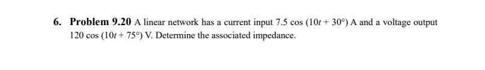
Worked solution 1. Write the phasors Both signals already use cosine.
I = 7.5 ∠ 30 ∘ A , V = 120 ∠ 75 ∘ V I=7.5\angle30^\circ\ \mathrm A,\quad V=120\angle75^\circ\ \mathrm V I = 7.5∠3 0 ∘ A , V = 120∠7 5 ∘ V 2. Divide voltage by current Divide magnitudes and subtract angles.
Z = V I = 120 7.5 ∠ ( 75 ∘ − 30 ∘ ) = 16 ∠ 45 ∘ = 16 cos 45 ∘ + j 16 sin 45 ∘ \begin{gathered}Z=\frac VI=\frac{120}{7.5}\angle(75^\circ-30^\circ)\\=16\angle45^\circ\\=16\cos45^\circ+j16\sin45^\circ\end{gathered} Z = I V = 7.5 120 ∠ ( 7 5 ∘ − 3 0 ∘ ) = 16∠4 5 ∘ = 16 cos 4 5 ∘ + j 16 sin 4 5 ∘ Final result Z = 16 ∠ 45 ∘ Ω = ( 11.314 + j 11.314 ) Ω Z=16\angle45^\circ\ \Omega=(11.314+j11.314)\ \Omega Z = 16∠4 5 ∘ Ω = ( 11.314 + j 11.314 ) Ω
Mixed AC networks from the assignment Find current in a series RLC circuit Problem Set 8 · Q8 (9.35)
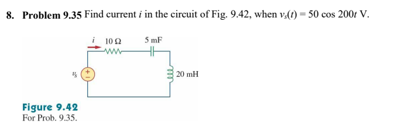
Worked solution 1. Translate the source and each element Read ω = 200 rad/s. This assigned problem adds a capacitor to the AC RL method.
V s = 50 ∠ 0 ∘ V \mathbf V_s=50\angle0^\circ\,\mathrm V V s = 50∠ 0 ∘ V Z L = j ( 200 ) ( 0.020 ) = j 4 Ω Z_L=j(200)(0.020)=j4\,\Omega Z L = j ( 200 ) ( 0.020 ) = j 4 Ω Z C = 1 / [ j ( 200 ) ( 0.005 ) ] = − j 1 Ω Z_C=1/[j(200)(0.005)]=-j1\,\Omega Z C = 1/ [ j ( 200 ) ( 0.005 )] = − j 1 Ω 2. Reduce the series circuit All three impedances carry the same current. Add their rectangular forms, then convert the total to polar form.
10 Ω j3 Ω net 50∠0° Phasor equivalent · the inductor and capacitor together have net inductive reactance j3 Ω. Z = 10 + j 4 − j 1 = 10 + j 3 Ω Z=10+j4-j1=10+j3\,\Omega Z = 10 + j 4 − j 1 = 10 + j 3 Ω ∣ Z ∣ = 10 2 + 3 2 = 10.440 Ω \lvert Z\rvert=\sqrt{10^2+3^2}=10.440\,\Omega ∣ Z ∣ = 1 0 2 + 3 2 = 10.440 Ω ∠ Z = tan − 1 ( 3 / 10 ) = 16.70 ∘ \angle Z=\tan^{-1}(3/10)=16.70^\circ ∠ Z = tan − 1 ( 3/10 ) = 16.7 0 ∘ 3. Divide the phasors Divide the peak magnitudes and subtract the impedance angle from the source angle.
I = 50 ∠ 0 ∘ 10.440 ∠ 16.70 ∘ = 4.789 ∠ ( − 16.70 ∘ ) A \mathbf I=\frac{50\angle0^\circ}{10.440\angle16.70^\circ}=4.789\angle(-16.70^\circ)\,\mathrm A I = 10.440∠16.7 0 ∘ 50∠ 0 ∘ = 4.789∠ ( − 16.7 0 ∘ ) A Final result The net reactance is inductive, so the current lags the source voltage.
i ( t ) = 4.789 cos ( 200 t − 16.70 ∘ ) A i(t)=4.789\cos(200t-16.70^\circ)\,\mathrm A i ( t ) = 4.789 cos ( 200 t − 16.7 0 ∘ ) A Find output voltage across a branch Problem Set 8 · Q9
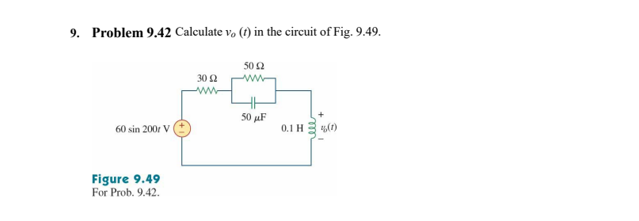
Worked solution 1. Convert to phasors Use a cosine reference for the sine source.
V s = 60 ∠ − 90 ∘ = − j 60 V Z L = j ( 200 ) ( 0.1 ) = j 20 Ω Z C = 1 j ( 200 ) ( 50 × 10 − 6 ) = − j 100 Ω \begin{gathered}V_s=60\angle-90^\circ=-j60\ \mathrm V\\Z_L=j(200)(0.1)=j20\ \Omega\\Z_C=\frac1{j(200)(50\times10^{-6})}=-j100\ \Omega\end{gathered} V s = 60∠ − 9 0 ∘ = − j 60 V Z L = j ( 200 ) ( 0.1 ) = j 20 Ω Z C = j ( 200 ) ( 50 × 1 0 − 6 ) 1 = − j 100 Ω 2. Combine the parallel branch The 50 Ω resistor is in parallel with the capacitor.
Z p = 50 ( − j 100 ) 50 − j 100 = 40 − j 20 Ω Z t o t a l = 30 + ( 40 − j 20 ) + j 20 = 70 Ω \begin{gathered}Z_p=\frac{50(-j100)}{50-j100}=40-j20\ \Omega\\Z_{total}=30+(40-j20)+j20=70\ \Omega\end{gathered} Z p = 50 − j 100 50 ( − j 100 ) = 40 − j 20 Ω Z t o t a l = 30 + ( 40 − j 20 ) + j 20 = 70 Ω 3. Use the voltage divider The output is across the inductor.
V o = V s Z L Z t o t a l = ( − j 60 ) j 20 70 = 17.1429 ∠ 0 ∘ V V_o=V_s\frac{Z_L}{Z_{total}}=(-j60)\frac{j20}{70}=17.1429\angle0^\circ\ \mathrm V V o = V s Z t o t a l Z L = ( − j 60 ) 70 j 20 = 17.1429∠ 0 ∘ V Final result v o ( t ) = 17.14 cos ( 200 t ) V = 17.14 sin ( 200 t + 90 ∘ ) V \begin{gathered}v_o(t)=17.14\cos(200t)\ \mathrm V\\=17.14\sin(200t+90^\circ)\ \mathrm V\end{gathered} v o ( t ) = 17.14 cos ( 200 t ) V = 17.14 sin ( 200 t + 9 0 ∘ ) V
Find the source current in a mixed network Problem Set 8 · Q10
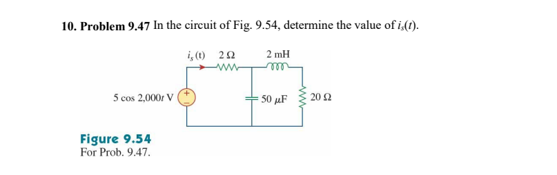
Worked solution 1. Find the impedances Use ω = 2000 rad/s, L = 0.002 H, and C = 50 μF.
V s = 5 ∠ 0 ∘ V Z L = j ( 2000 ) ( 0.002 ) = j 4 Ω Z C = 1 j ( 2000 ) ( 50 × 10 − 6 ) = − j 10 Ω \begin{gathered}V_s=5\angle0^\circ\ \mathrm V\\Z_L=j(2000)(0.002)=j4\ \Omega\\Z_C=\frac1{j(2000)(50\times10^{-6})}=-j10\ \Omega\end{gathered} V s = 5∠ 0 ∘ V Z L = j ( 2000 ) ( 0.002 ) = j 4 Ω Z C = j ( 2000 ) ( 50 × 1 0 − 6 ) 1 = − j 10 Ω 2. Combine the branches The capacitor is in parallel with the series 20 Ω resistor and inductor.
Z p = ( − j 10 ) ( 20 + j 4 ) − j 10 + 20 + j 4 = 40 − j 200 20 − j 6 = 4.5872 − j 8.6239 Ω \begin{gathered}Z_p=\frac{(-j10)(20+j4)}{-j10+20+j4}\\=\frac{40-j200}{20-j6}=4.5872-j8.6239\ \Omega\end{gathered} Z p = − j 10 + 20 + j 4 ( − j 10 ) ( 20 + j 4 ) = 20 − j 6 40 − j 200 = 4.5872 − j 8.6239 Ω 3. Add the 2 Ω resistor and solve Divide the source voltage by the total impedance.
Z t o t a l = 2 + Z p = 6.5872 − j 8.6239 = 10.8518 ∠ − 52.626 ∘ Ω I s = 5 ∠ 0 ∘ 10.8518 ∠ − 52.626 ∘ = 0.46075 ∠ 52.626 ∘ A \begin{gathered}Z_{total}=2+Z_p=6.5872-j8.6239\\=10.8518\angle-52.626^\circ\ \Omega\\I_s=\frac{5\angle0^\circ}{10.8518\angle-52.626^\circ}\\=0.46075\angle52.626^\circ\ \mathrm A\end{gathered} Z t o t a l = 2 + Z p = 6.5872 − j 8.6239 = 10.8518∠ − 52.62 6 ∘ Ω I s = 10.8518∠ − 52.62 6 ∘ 5∠ 0 ∘ = 0.46075∠52.62 6 ∘ A Final result i s ( t ) = 460.75 cos ( 2000 t + 52.63 ∘ ) m A i_s(t)=460.75\cos(2000t+52.63^\circ)\ \mathrm{mA} i s ( t ) = 460.75 cos ( 2000 t + 52.6 3 ∘ ) mA The total reactance is capacitive, so source current leads source voltage.
Related lecture examples · 9.9 · series RC current and voltage · 9.10 · input impedance · 9.11 · parallel LC voltage divider
Back to question types ↑
Other Chapter 7–9 questions These prompts cover other material in the posted scope. Open a topic to see its original questions and solutions.
RC switching · time constant, charging and discharging RC time constant Problem Set 6 · Q1
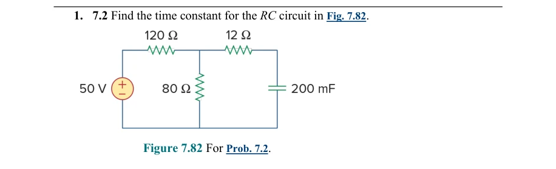
Worked solution 1. Deactivate source Replace the ideal 50-V source by a short for resistance calculation.
R t h = 12 + ( 120 ∥ 80 ) = 12 + 48 = 60 Ω R_{th}=12+(120\parallel80)=12+48=60\,\Omega R t h = 12 + ( 120 ∥ 80 ) = 12 + 48 = 60 Ω 2. Time constant Convert 200 mF to 0.2 F.
τ = R t h C = 60 ( 0.2 ) = 12 s \tau=R_{th}C=60(0.2)=12\,\mathrm s τ = R t h C = 60 ( 0.2 ) = 12 s Final result τ = 12 s \tau=12\,\mathrm s τ = 12 s The source value affects the final voltage, not this time constant.
A source disconnects from a charged capacitor Problem Set 6 · Q2
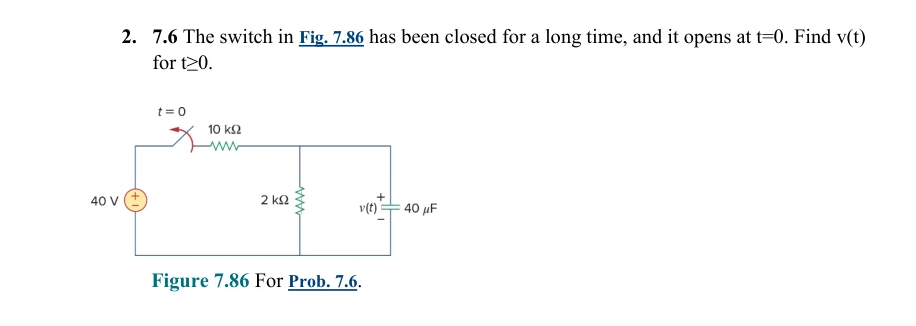
Worked solution 1. Initial voltage Open the capacitor in the DC equivalent.
v ( 0 ) = 40 2 10 + 2 = 20 3 V v(0)=40\frac2{10+2}=\frac{20}{3}\,\mathrm V v ( 0 ) = 40 10 + 2 2 = 3 20 V 2. Discharge path Opening disconnects the 10-kΩ source branch; only 2 kΩ discharges the capacitor.
τ = 2000 ( 40 × 10 − 6 ) = 0.08 s \tau=2000(40\times10^{-6})=0.08\,\mathrm s τ = 2000 ( 40 × 1 0 − 6 ) = 0.08 s 3. Natural response Use the continuous initial voltage.
v ( t ) = 20 3 e − t / 0.08 V v(t)=\frac{20}{3}e^{-t/0.08}\,\mathrm V v ( t ) = 3 20 e − t /0.08 V Final result v ( t ) = 6.666667 e − 12.5 t V v(t)=6.666667e^{-12.5t}\,\mathrm V v ( t ) = 6.666667 e − 12.5 t V v(0)=6.666667 V and v tends to zero.
Capacitor discharge voltage Problem Set 6 · Q3
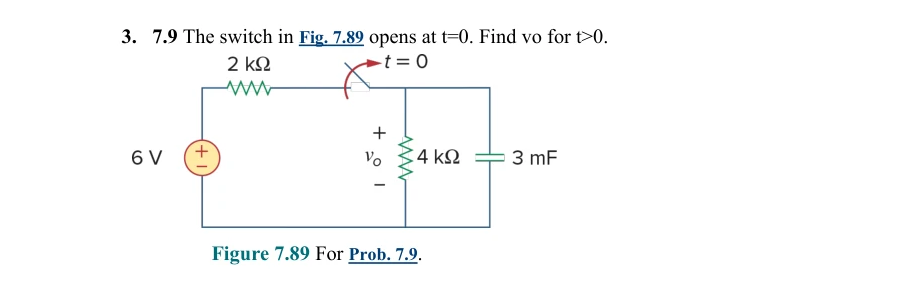
Worked solution 1. Initial voltage At steady state use the resistor divider.
v 0 ( 0 ) = 6 4 2 + 4 = 4 V v_0(0)=6\frac4{2+4}=4\,\mathrm V v 0 ( 0 ) = 6 2 + 4 4 = 4 V 2. Time constant Only 4 kΩ remains across the capacitor.
τ = 4000 ( 0.003 ) = 12 s \tau=4000(0.003)=12\,\mathrm s τ = 4000 ( 0.003 ) = 12 s 3. Discharge Apply the RC natural response.
v 0 ( t ) = 4 e − t / 12 V v_0(t)=4e^{-t/12}\,\mathrm V v 0 ( t ) = 4 e − t /12 V Final result v 0 ( t ) = 4 e − t / 12 V v_0(t)=4e^{-t/12}\,\mathrm V v 0 ( t ) = 4 e − t /12 V Initial continuity and zero final voltage are satisfied; the released key assumes the initial DC steady state.
Two RC switching circuits Problem Set 6 · Q7
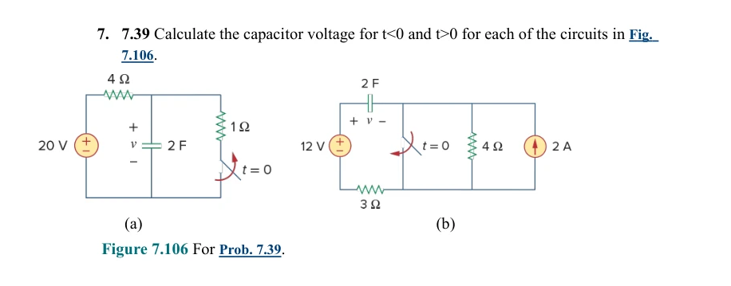
Worked solution 1. Part (a), initial and final Before opening the 1-Ω branch forms a divider; afterwards the capacitor approaches 20 V.
v a ( 0 ) = 20 1 4 + 1 = 4 V ; v a ( ∞ ) = 20 V v_a(0)=20\frac1{4+1}=4\,\mathrm V;\quad v_a(\infty)=20\,\mathrm V v a ( 0 ) = 20 4 + 1 1 = 4 V ; v a ( ∞ ) = 20 V 2. Part (a), response The remaining resistance is 4 Ω.
τ a = 4 ( 2 ) = 8 s ; v a ( t ) = 20 − 16 e − t / 8 V ( t > 0 ) \tau_a=4(2)=8\,\mathrm s;\quad v_a(t)=20-16e^{-t/8}\,\mathrm V\quad(t>0) τ a = 4 ( 2 ) = 8 s ; v a ( t ) = 20 − 16 e − t /8 V ( t > 0 ) 3. Part (b), initial and final Initially the left capacitor plate is at 12 V and the right plate at 2×4=8 V relative to the lower node. Closing the switch makes the right plate zero.
v b ( 0 ) = 12 − 8 = 4 V ; v b ( ∞ ) = 12 V v_b(0)=12-8=4\,\mathrm V;\quad v_b(\infty)=12\,\mathrm V v b ( 0 ) = 12 − 8 = 4 V ; v b ( ∞ ) = 12 V 4. Part (b), response After closing, only 3 Ω determines the capacitor time constant.
τ b = 3 ( 2 ) = 6 s ; v b ( t ) = 12 − 8 e − t / 6 V ( t > 0 ) \tau_b=3(2)=6\,\mathrm s;\quad v_b(t)=12-8e^{-t/6}\,\mathrm V\quad(t>0) τ b = 3 ( 2 ) = 6 s ; v b ( t ) = 12 − 8 e − t /6 V ( t > 0 ) Final result v a = { 4 t < 0 20 − 16 e − t / 8 t > 0 V ; v b = { 4 t < 0 12 − 8 e − t / 6 t > 0 V v_a=\begin{cases}4&t<0\\20-16e^{-t/8}&t>0\end{cases}\mathrm V;\quad v_b=\begin{cases}4&t<0\\12-8e^{-t/6}&t>0\end{cases}\mathrm V v a = { 4 20 − 16 e − t /8 t < 0 t > 0 V ; v b = { 4 12 − 8 e − t /6 t < 0 t > 0 V Both capacitor voltages remain 4 V at switching and approach their new DC values.
A capacitor changes sources Problem Set 6 · Q8
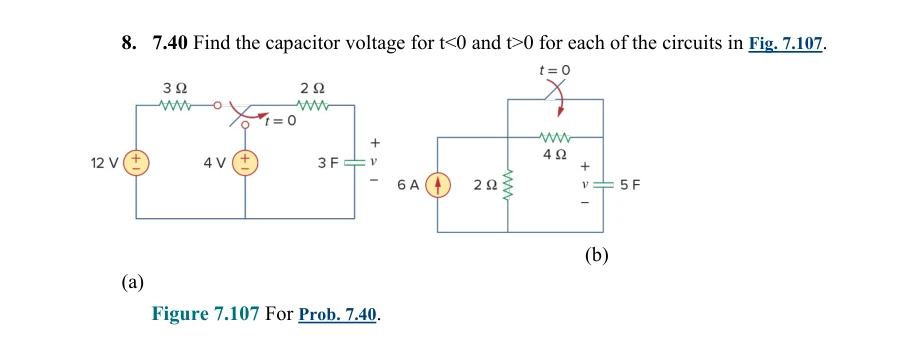
Worked solution 1. Part (a), boundary values At DC neither resistor has a drop; switching changes the final voltage from 12 V to 4 V.
v a ( 0 ) = 12 V ; v a ( ∞ ) = 4 V ; τ a = 2 ( 3 ) = 6 s v_a(0)=12\,\mathrm V;\quad v_a(\infty)=4\,\mathrm V;\quad\tau_a=2(3)=6\,\mathrm s v a ( 0 ) = 12 V ; v a ( ∞ ) = 4 V ; τ a = 2 ( 3 ) = 6 s 2. Part (a), response Use the complete RC response.
v a ( t ) = 4 + 8 e − t / 6 V ( t > 0 ) v_a(t)=4+8e^{-t/6}\,\mathrm V\quad(t>0) v a ( t ) = 4 + 8 e − t /6 V ( t > 0 ) 3. Part (b), no transient amplitude The capacitor is open at DC, so no current flows through 4 Ω initially. The source sets 6×2=12 V before and after switching.
v b ( 0 ) = v b ( ∞ ) = 12 V ; τ a f t e r = 2 ( 5 ) = 10 s v_b(0)=v_b(\infty)=12\,\mathrm V;\quad\tau_{after}=2(5)=10\,\mathrm s v b ( 0 ) = v b ( ∞ ) = 12 V ; τ a f t er = 2 ( 5 ) = 10 s 4. Part (b), constant voltage The exponential coefficient is zero.
v b ( t ) = 12 + ( 12 − 12 ) e − t / 10 = 12 V v_b(t)=12+(12-12)e^{-t/10}=12\,\mathrm V v b ( t ) = 12 + ( 12 − 12 ) e − t /10 = 12 V Final result v a = { 12 t < 0 4 + 8 e − t / 6 t > 0 V ; v b = 12 V for all t v_a=\begin{cases}12&t<0\\4+8e^{-t/6}&t>0\end{cases}\mathrm V;\quad v_b=12\,\mathrm V\ \text{for all }t v a = { 12 4 + 8 e − t /6 t < 0 t > 0 V ; v b = 12 V for all t Switching a resistance need not create a transient when the initial and final capacitor voltages coincide.
Compare opening and closing the same switch Problem Set 6 · Q9
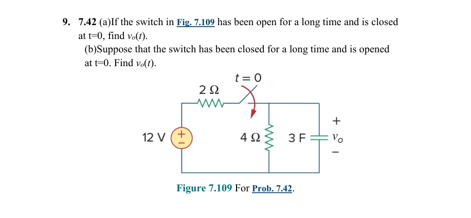
Worked solution 1. Part (a), initial and final Initially the capacitor has discharged through 4 Ω. After closing the divider sets its final voltage.
v 0 ( 0 ) = 0 ; v 0 ( ∞ ) = 12 4 2 + 4 = 8 V v_0(0)=0;\quad v_0(\infty)=12\frac4{2+4}=8\,\mathrm V v 0 ( 0 ) = 0 ; v 0 ( ∞ ) = 12 2 + 4 4 = 8 V 2. Part (a), charging response Deactivate the source to find 2||4 Ω.
τ a = ( 2 ∥ 4 ) ( 3 ) = 4 s ; v 0 a ( t ) = 8 ( 1 − e − t / 4 ) V \tau_a=(2\parallel4)(3)=4\,\mathrm s;\quad v_{0a}(t)=8(1-e^{-t/4})\,\mathrm V τ a = ( 2 ∥ 4 ) ( 3 ) = 4 s ; v 0 a ( t ) = 8 ( 1 − e − t /4 ) V 3. Part (b), discharge response Start at 8 V. Opening disconnects the 2-Ω source branch; discharge occurs through 4 Ω.
τ b = 4 ( 3 ) = 12 s ; v 0 b ( t ) = 8 e − t / 12 V \tau_b=4(3)=12\,\mathrm s;\quad v_{0b}(t)=8e^{-t/12}\,\mathrm V τ b = 4 ( 3 ) = 12 s ; v 0 b ( t ) = 8 e − t /12 V Final result (a) v 0 ( t ) = 8 ( 1 − e − t / 4 ) V ; (b) v 0 ( t ) = 8 e − t / 12 V ( t > 0 ) \text{(a) }v_0(t)=8(1-e^{-t/4})\,\mathrm V;\qquad\text{(b) }v_0(t)=8e^{-t/12}\,\mathrm V\quad(t>0) (a) v 0 ( t ) = 8 ( 1 − e − t /4 ) V ; (b) v 0 ( t ) = 8 e − t /12 V ( t > 0 ) Closing uses the parallel resistance 2||4 Ω; opening uses 4 Ω alone, so discharge is three times slower.
Related lecture examples · 7.1 · natural response · 7.2 · switch opens · 7.10 · switch changes position · 7.11 · switched source
Sinusoids · frequency, phase and lead or lag Read a sinusoid and evaluate it at a given time Problem Set 8 · Q1
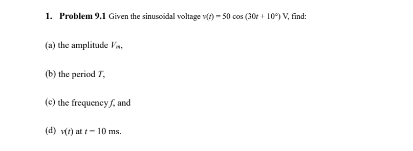
Worked solution 1. Identify the constants Compare with v(t) = Vm cos(ωt + φ).
V m = 50 V , ω = 30 r a d / s , ϕ = 10 ∘ V_m=50\ \mathrm V,\qquad\omega=30\ \mathrm{rad/s},\qquad\phi=10^\circ V m = 50 V , ω = 30 rad/s , ϕ = 1 0 ∘ 2. Find period and frequency One cycle is 2π radians.
T = 2 π ω = 2 π 30 = 0.20944 s f = 1 T = 30 2 π = 4.7746 H z \begin{gathered}T=\frac{2\pi}{\omega}=\frac{2\pi}{30}=0.20944\ \mathrm s\\f=\frac1T=\frac{30}{2\pi}=4.7746\ \mathrm{Hz}\end{gathered} T = ω 2 π = 30 2 π = 0.20944 s f = T 1 = 2 π 30 = 4.7746 Hz 3. Substitute the time Convert the phase to radians before adding it to ωt.
t = 10 m s = 0.010 s v ( 0.010 ) = 50 cos ( 30 ( 0.010 ) + 10 π 180 ) = 50 cos ( 0.474533 ) = 44.4753 V \begin{gathered}t=10\ \mathrm{ms}=0.010\ \mathrm s\\v(0.010)=50\cos\left(30(0.010)+10\frac{\pi}{180}\right)\\=50\cos(0.474533)=44.4753\ \mathrm V\end{gathered} t = 10 ms = 0.010 s v ( 0.010 ) = 50 cos ( 30 ( 0.010 ) + 10 180 π ) = 50 cos ( 0.474533 ) = 44.4753 V Final result V m = 50 V , T = 209.44 m s f = 4.775 H z , v ( 10 m s ) = 44.48 V \begin{gathered}V_m=50\ \mathrm V,\quad T=209.44\ \mathrm{ms}\\f=4.775\ \mathrm{Hz},\quad v(10\ \mathrm{ms})=44.48\ \mathrm V\end{gathered} V m = 50 V , T = 209.44 ms f = 4.775 Hz , v ( 10 ms ) = 44.48 V Here, 0.3 rad = 17.19°. Keep radians and degrees consistent.
Find which sinusoid lags Problem Set 8 · Q2
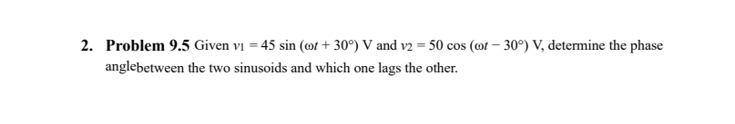
Worked solution 1. Use cosine for both Use sin θ = cos(θ − 90°).
v 1 = 45 cos ( ω t − 60 ∘ ) v 2 = 50 cos ( ω t − 30 ∘ ) \begin{gathered}v_1=45\cos(\omega t-60^\circ)\\v_2=50\cos(\omega t-30^\circ)\end{gathered} v 1 = 45 cos ( ω t − 6 0 ∘ ) v 2 = 50 cos ( ω t − 3 0 ∘ ) 2. Compare the phase angles The larger cosine phase leads.
Δ ϕ = ( − 30 ∘ ) − ( − 60 ∘ ) = 30 ∘ \Delta\phi=(-30^\circ)-(-60^\circ)=30^\circ Δ ϕ = ( − 3 0 ∘ ) − ( − 6 0 ∘ ) = 3 0 ∘ Final result v 1 lags v 2 by 30 ∘ v_1\text{ lags }v_2\text{ by }30^\circ v 1 lags v 2 by 3 0 ∘
Compare three pairs of waveforms Problem Set 8 · Q3
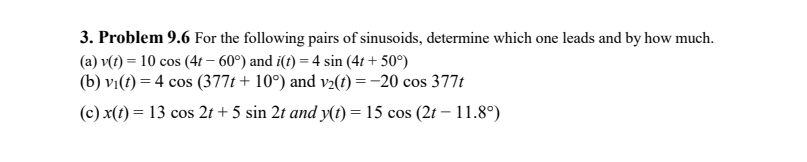
Worked solution 1. (a) Convert current to cosine Given v = 10 cos(4t − 60°) and i = 4 sin(4t + 50°).
i = 4 cos ( 4 t − 40 ∘ ) ( − 40 ∘ ) − ( − 60 ∘ ) = 20 ∘ i leads v by 20 ∘ \begin{gathered}i=4\cos(4t-40^\circ)\\(-40^\circ)-(-60^\circ)=20^\circ\\i\text{ leads }v\text{ by }20^\circ\end{gathered} i = 4 cos ( 4 t − 4 0 ∘ ) ( − 4 0 ∘ ) − ( − 6 0 ∘ ) = 2 0 ∘ i leads v by 2 0 ∘ 2. (b) Remove the negative amplitude Given v₁ = 4 cos(377t + 10°) and v₂ = −20 cos(377t). Add 180° to the phase of v₂.
v 2 = 20 cos ( 377 t + 180 ∘ ) 180 ∘ − 10 ∘ = 170 ∘ v 2 leads v 1 by 170 ∘ \begin{gathered}v_2=20\cos(377t+180^\circ)\\180^\circ-10^\circ=170^\circ\\v_2\text{ leads }v_1\text{ by }170^\circ\end{gathered} v 2 = 20 cos ( 377 t + 18 0 ∘ ) 18 0 ∘ − 1 0 ∘ = 17 0 ∘ v 2 leads v 1 by 17 0 ∘ 3. (c) Combine the two terms in x Given x = 13 cos(2t) + 5 sin(2t) and y = 15 cos(2t − 11.8°).
X = 13 − j 5 = 13.928 ∠ − 21.038 ∘ x = 13.928 cos ( 2 t − 21.038 ∘ ) Δ ϕ = − 11.8 ∘ − ( − 21.038 ∘ ) = 9.238 ∘ \begin{gathered}X=13-j5=13.928\angle-21.038^\circ\\x=13.928\cos(2t-21.038^\circ)\\\Delta\phi=-11.8^\circ-(-21.038^\circ)=9.238^\circ\end{gathered} X = 13 − j 5 = 13.928∠ − 21.03 8 ∘ x = 13.928 cos ( 2 t − 21.03 8 ∘ ) Δ ϕ = − 11. 8 ∘ − ( − 21.03 8 ∘ ) = 9.23 8 ∘ Final result (a) i leads by 20 ∘ (b) v 2 leads by 170 ∘ (c) y leads x by 9.24 ∘ \begin{gathered}\text{(a) }i\text{ leads by }20^\circ\\\text{(b) }v_2\text{ leads by }170^\circ\\\text{(c) }y\text{ leads }x\text{ by }9.24^\circ\end{gathered} (a) i leads by 2 0 ∘ (b) v 2 leads by 17 0 ∘ (c) y leads x by 9.2 4 ∘
Related lecture examples · 9.1 · sinusoid parameters · 9.2 · lead or lag
Complex arithmetic and phasor conversion Evaluate complex expressions Problem Set 8 · Q4
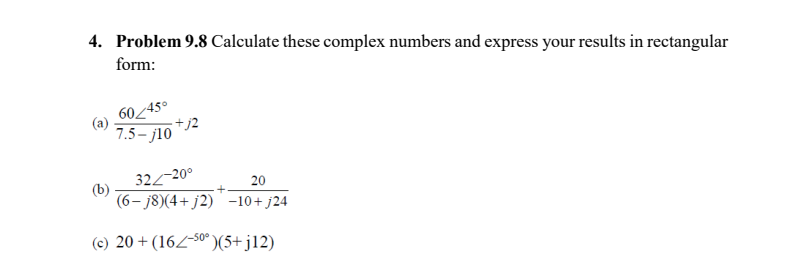
Worked solution 1. (a) Divide, then add j2 Convert the denominator to polar form.
60 ∠ 45 ∘ 7.5 − j 10 + j 2 7.5 − j 10 = 12.5 ∠ − 53.130 ∘ = 4.8 ∠ 98.130 ∘ + j 2 = − 0.67882 + j 4.75176 + j 2 = − 0.67882 + j 6.75176 \begin{gathered}\frac{60\angle45^\circ}{7.5-j10}+j2\\7.5-j10=12.5\angle-53.130^\circ\\=4.8\angle98.130^\circ+j2\\=-0.67882+j4.75176+j2=-0.67882+j6.75176\end{gathered} 7.5 − j 10 60∠4 5 ∘ + j 2 7.5 − j 10 = 12.5∠ − 53.13 0 ∘ = 4.8∠98.13 0 ∘ + j 2 = − 0.67882 + j 4.75176 + j 2 = − 0.67882 + j 6.75176 2. (b) Work out each fraction Multiply the first denominator, then divide each complex fraction.
32 ∠ − 20 ∘ ( 6 − j 8 ) ( 4 + j 2 ) + 20 − 10 + j 24 ( 6 − j 8 ) ( 4 + j 2 ) = 40 − j 20 32 ∠ − 20 ∘ 40 − j 20 = 0.71085 + j 0.08181 20 − 10 + j 24 = − 0.29586 − j 0.71006 Sum = 0.41499 − j 0.62825 \begin{gathered}\frac{32\angle-20^\circ}{(6-j8)(4+j2)}+\frac{20}{-10+j24}\\(6-j8)(4+j2)=40-j20\\\frac{32\angle-20^\circ}{40-j20}=0.71085+j0.08181\\\frac{20}{-10+j24}=-0.29586-j0.71006\\\text{Sum}=0.41499-j0.62825\end{gathered} ( 6 − j 8 ) ( 4 + j 2 ) 32∠ − 2 0 ∘ + − 10 + j 24 20 ( 6 − j 8 ) ( 4 + j 2 ) = 40 − j 20 40 − j 20 32∠ − 2 0 ∘ = 0.71085 + j 0.08181 − 10 + j 24 20 = − 0.29586 − j 0.71006 Sum = 0.41499 − j 0.62825 3. (c) Multiply, then add 20 Convert 5 + j12 to polar form.
20 + ( 16 ∠ − 50 ∘ ) ( 5 + j 12 ) 5 + j 12 = 13 ∠ 67.380 ∘ = 20 + 208 ∠ 17.380 ∘ = 20 + 198.5035 + j 62.1317 \begin{gathered}20+(16\angle-50^\circ)(5+j12)\\5+j12=13\angle67.380^\circ\\=20+208\angle17.380^\circ\\=20+198.5035+j62.1317\end{gathered} 20 + ( 16∠ − 5 0 ∘ ) ( 5 + j 12 ) 5 + j 12 = 13∠67.38 0 ∘ = 20 + 208∠17.38 0 ∘ = 20 + 198.5035 + j 62.1317 Final result (a) − 0.6788 + j 6.7518 (b) 0.4150 − j 0.6283 (c) 218.5035 + j 62.1317 \begin{gathered}\text{(a) }-0.6788+j6.7518\\\text{(b) }0.4150-j0.6283\\\text{(c) }218.5035+j62.1317\end{gathered} (a) − 0.6788 + j 6.7518 (b) 0.4150 − j 0.6283 (c) 218.5035 + j 62.1317
Convert time signals into phasors Problem Set 8 · Q5
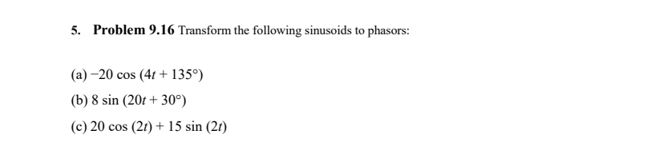
Worked solution 1. (a) −20 cos(4t + 135°) A negative amplitude is a 180° phase shift.
− 20 cos ( 4 t + 135 ∘ ) = 20 cos ( 4 t − 45 ∘ ) X a = 20 ∠ − 45 ∘ \begin{gathered}-20\cos(4t+135^\circ)=20\cos(4t-45^\circ)\\X_a=20\angle-45^\circ\end{gathered} − 20 cos ( 4 t + 13 5 ∘ ) = 20 cos ( 4 t − 4 5 ∘ ) X a = 20∠ − 4 5 ∘ 2. (b) 8 sin(20t + 30°) Subtract 90° to change sine into cosine.
8 sin ( 20 t + 30 ∘ ) = 8 cos ( 20 t − 60 ∘ ) X b = 8 ∠ − 60 ∘ \begin{gathered}8\sin(20t+30^\circ)=8\cos(20t-60^\circ)\\X_b=8\angle-60^\circ\end{gathered} 8 sin ( 20 t + 3 0 ∘ ) = 8 cos ( 20 t − 6 0 ∘ ) X b = 8∠ − 6 0 ∘ 3. (c) 20 cos(2t) + 15 sin(2t) Convert each term, then add in rectangular form.
X c = 20 ∠ 0 ∘ + 15 ∠ − 90 ∘ = 20 − j 15 ∣ X c ∣ = 20 2 + 15 2 = 25 ∠ X c = tan − 1 ( − 15 / 20 ) = − 36.870 ∘ \begin{gathered}X_c=20\angle0^\circ+15\angle-90^\circ=20-j15\\|X_c|=\sqrt{20^2+15^2}=25\\\angle X_c=\tan^{-1}(-15/20)=-36.870^\circ\end{gathered} X c = 20∠ 0 ∘ + 15∠ − 9 0 ∘ = 20 − j 15 ∣ X c ∣ = 2 0 2 + 1 5 2 = 25 ∠ X c = tan − 1 ( − 15/20 ) = − 36.87 0 ∘ Final result X a = 20 ∠ − 45 ∘ , X b = 8 ∠ − 60 ∘ X c = 25 ∠ − 36.87 ∘ \begin{gathered}X_a=20\angle-45^\circ,\quad X_b=8\angle-60^\circ\\X_c=25\angle-36.87^\circ\end{gathered} X a = 20∠ − 4 5 ∘ , X b = 8∠ − 6 0 ∘ X c = 25∠ − 36.8 7 ∘
Add sinusoids at the same frequency Problem Set 8 · Q7
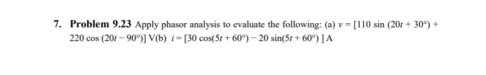
Worked solution 1. (a) Voltage Given v = 110 sin(20t + 30°) + 220 cos(20t − 90°) V.
V = 110 ∠ − 60 ∘ + 220 ∠ − 90 ∘ = 55 − j 95.263 − j 220 = 55 − j 315.263 ∣ V ∣ = 55 2 + 315.263 2 = 320.024 ∠ V = tan − 1 ( − 315.263 / 55 ) = − 80.104 ∘ \begin{gathered}V=110\angle-60^\circ+220\angle-90^\circ\\=55-j95.263-j220=55-j315.263\\|V|=\sqrt{55^2+315.263^2}=320.024\\\angle V=\tan^{-1}(-315.263/55)=-80.104^\circ\end{gathered} V = 110∠ − 6 0 ∘ + 220∠ − 9 0 ∘ = 55 − j 95.263 − j 220 = 55 − j 315.263 ∣ V ∣ = 5 5 2 + 315.26 3 2 = 320.024 ∠ V = tan − 1 ( − 315.263/55 ) = − 80.10 4 ∘ 2. (b) Current Given i = 30 cos(5t + 60°) − 20 sin(5t + 60°) A. Keep the minus sign when adding the phasors.
I = 30 ∠ 60 ∘ − 20 ∠ − 30 ∘ = ( 15 + j 25.981 ) − ( 17.321 − j 10 ) = − 2.321 + j 35.981 ∣ I ∣ = 36.056 , ∠ I = 93.690 ∘ \begin{gathered}I=30\angle60^\circ-20\angle-30^\circ\\=(15+j25.981)-(17.321-j10)\\=-2.321+j35.981\\|I|=36.056,\quad\angle I=93.690^\circ\end{gathered} I = 30∠6 0 ∘ − 20∠ − 3 0 ∘ = ( 15 + j 25.981 ) − ( 17.321 − j 10 ) = − 2.321 + j 35.981 ∣ I ∣ = 36.056 , ∠ I = 93.69 0 ∘ Final result v ( t ) = 320.02 cos ( 20 t − 80.10 ∘ ) V i ( t ) = 36.06 cos ( 5 t + 93.69 ∘ ) A \begin{gathered}v(t)=320.02\cos(20t-80.10^\circ)\ \mathrm V\\i(t)=36.06\cos(5t+93.69^\circ)\ \mathrm A\end{gathered} v ( t ) = 320.02 cos ( 20 t − 80.1 0 ∘ ) V i ( t ) = 36.06 cos ( 5 t + 93.6 9 ∘ ) A The current phasor is in quadrant II, so its phase is greater than 90°.
Related lecture examples · 9.3 · complex arithmetic · phasor conversion · 9.5 · return to time · 9.7 · phasor equation
Back to question types ↑